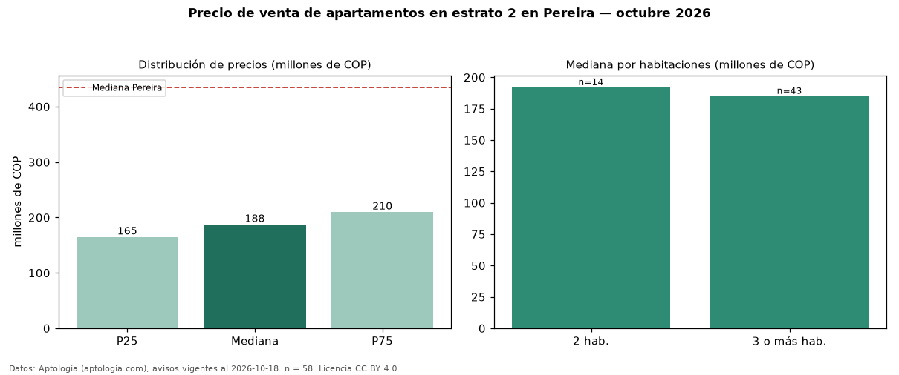

Precio de venta de apartamentos en estrato 2 en Pereira — octubre 2026
COP 188 millones es el precio mediano de apartamentos en estrato 2 en venta en Pereira (n = 58 avisos). Eso es 57 % menos que la mediana de los apartamentos en venta de Pereira (COP 435 millones, n = 4.450); este segmento reúne el 1 % de esos avisos. Por metro cuadrado, la mediana es COP 3,90 millones/m² (n = 56), 29 % por debajo de los apartamentos en venta de Pereira (COP 5,50 millones/m²). El área mediana anunciada es 47 m². El segmento con más oferta es el de 3 o más habitaciones (43 avisos, mediana COP 185 millones); pasar de 2 habitaciones a 3 o más habitaciones cambia la mediana −4 %. La administración mediana declarada es COP 68.684 al mes (n = 34). 69 % de los avisos con el dato declara parqueadero. La mitad central de los avisos va de COP 165 millones a COP 210 millones (razón 1,3), una dispersión baja. Datos: Aptología (aptologia.com), CC BY 4.0 — https://www.aptologia.com/venta/pereira. Archivos: PDF, CSV con las cifras y gráfica PNG.

| Avisos únicos | 58 |
|---|---|
| Percentil 25 | COP 165.000.000 |
| Mediana | COP 187.500.000 |
| Percentil 75 | COP 210.000.000 |
| Mediana por m² | COP 3.895.297 |
Fuente: avisos vigentes de portales inmobiliarios recopilados por Aptología, deduplicados (mínimo 30 avisos únicos por celda). Precios pedidos, no cerrados. Fecha: 2026-10-18.